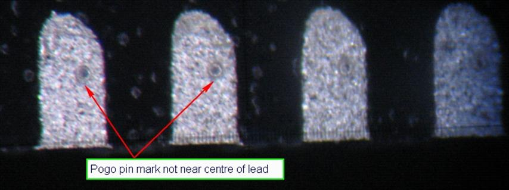

Service History
Subject: VQFN-108 imprint not at centre of device's lead pad
Handler Model: NS-8040 (NS-001, S/N: 181452)
Controller: RC520
Date: 17 Jul 2009
Symptom
For new Infineon device 108 VQFN 0.40mm pitch,
- VQFN-108 dual and quad site kit had failed buyoff,
- Failure is due to imprint not centered on the pad

proposed design for the nest and shuttle to improve the imprint of the VQFN-108:
- There is nothing changes for the socket and pogo pin,
- Improved design for the nest
a. Tighten the device-nest guiding from 11.55 to 11.52 (minimize the offset)
b. Change the "+" device-nest guiding to "4 corner" device-nest guiding (minimize the rotation of the device)
- Improved design of the shuttle cater for new nest design.
So, we need to tool up few items for new proposed design:
- Quad Site kit:
a. Nest (08 pcs)
b. Shuttle (04pcs)
- Dual Site kit:
a. Nest (04 pcs)
b. Shuttle (04pcs)
Action
21 Jul 2009 Infineon NS-001 NS-8040 (S/N: 181452) checking on miss alignment at Index Arm 2
Dial gauge checking of Index Arm 1 and Arm 2 alignment.
Index Arm 1 alignment check, ok
Index Arm 2 alignment check, found alignment for X and Y out.
Compliance unit Index Arm 2-2 with nest move abit when contact at socket guide base, Index Arm 21 does not have this problem.
24 Jul 2009 Infineon NS-001 NS-8040 (S/N: 181452) Alignment of Index Arm 2
Index Arm alignment jig from Thailand found dented, grind at Infineon.
Index Arm 2 alignment using Index Arm alignment jig.
Check P50 and P51 for Index Arm 2 by changekit.
Cause
Index Arm 2 alignment out caused imprint not centered on the pad of VQFN-108 device.